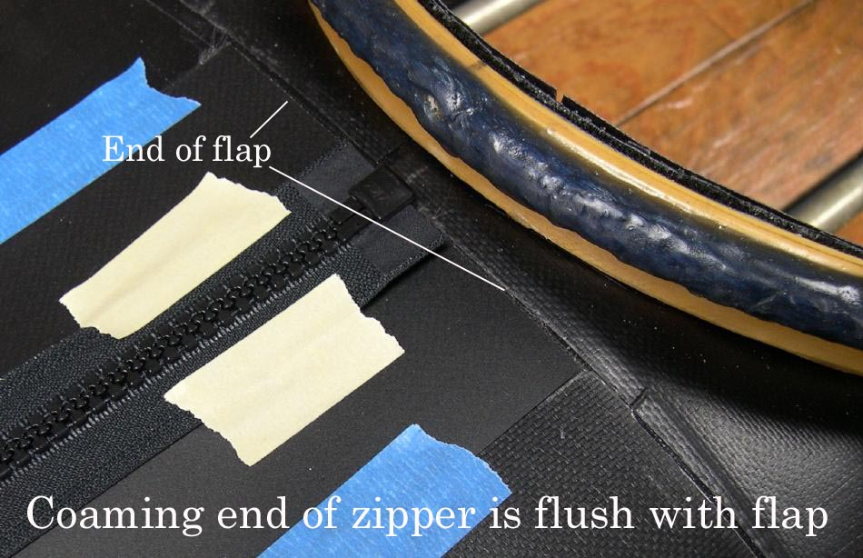

| Zipper to Stem Attachment ( 4 of 11 ) | Menu Previous Page Next Page |
|

Zipper Details - At the coaming end of the zipper, the zipper is sewn flush with the end of the flap. The flap extends to within 1/2" of the coaming. The remaining distance to the coaming will be later cut open for removal of the skin. Note that in this "before sewing" photo that the dull side of the flap is showing.
|
|